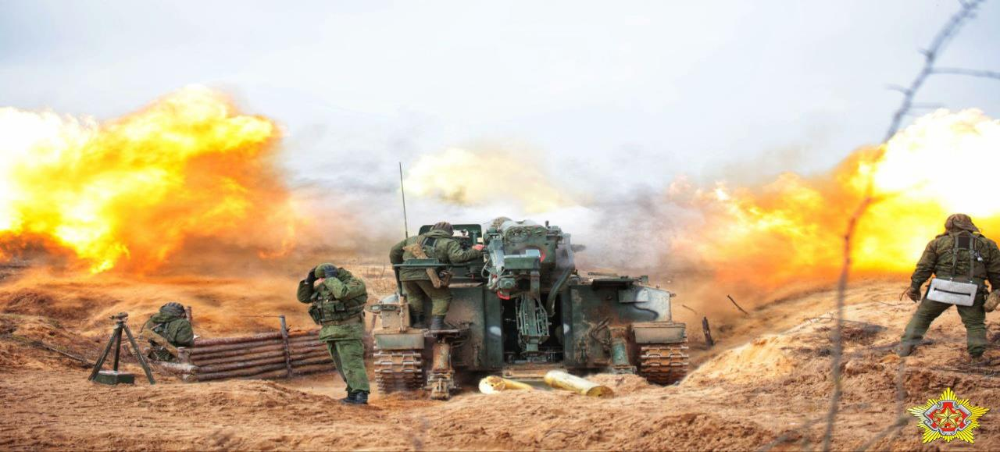
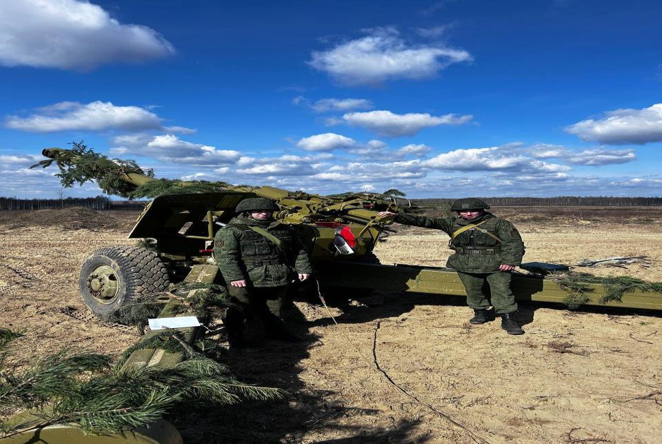
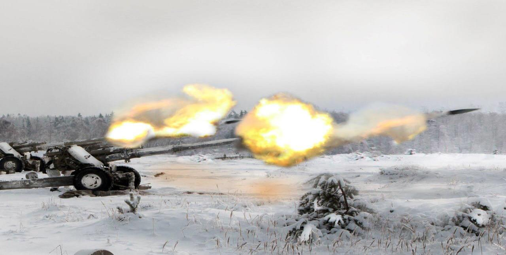
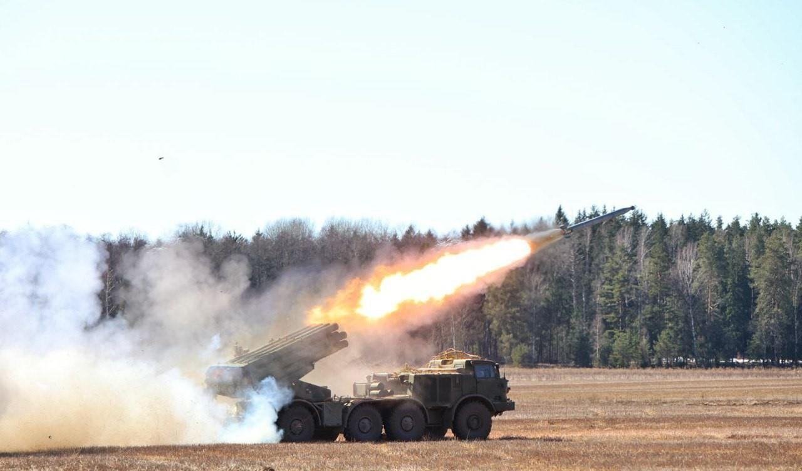
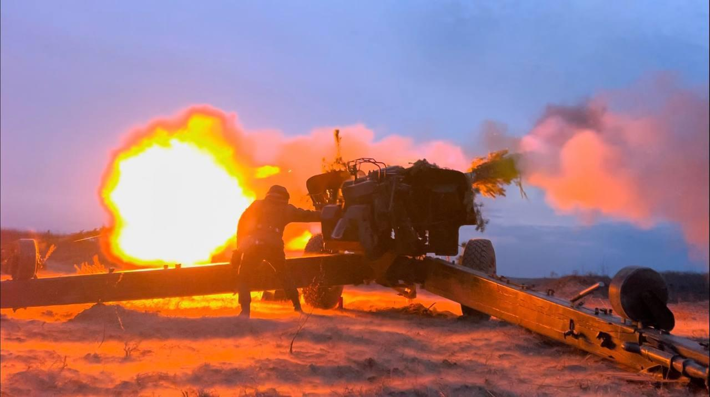
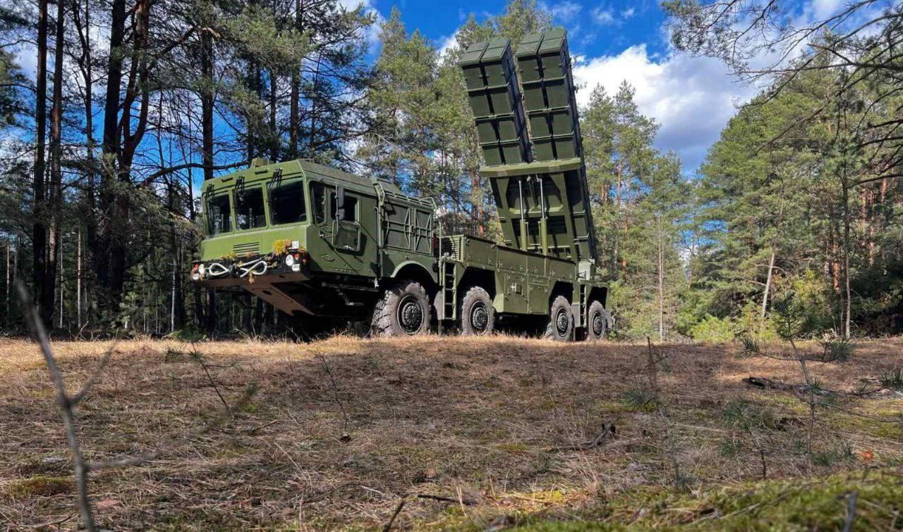

День ракетных войск и артиллерии. История праздника.
19 ноября личный состав и ветераны Вооруженных Сил отмечают День ракетных войск и артиллерии. Ракетные войска и артиллерия Республики Беларусь составляют сегодня род войск Сухопутных войск. Они организационно входят во все общевойсковые формирования до батальона включительно и предназначены для огневого поражения противника в операции (бою) в целях нанесения противнику максимального ущерба и снижения его боевого потенциала, изменения соотношения в силах и средствах в свою пользу, создания благоприятных условий для выполнения общевойсковыми объединениями, соединениями и воинскими частями поставленных задач.
Кроме огневого поражения в интересах общевойсковых объединений, соединений, воинских частей и подразделений, они наносят поражение и в интересах действий авиации, войск ПВО, других родов войск и специальных войск. Роль ракетных войск и артиллерии в операциях определяется объемом и важностью решаемых ими задач, их местом в системе комплексного огневого поражения. Сегодня в Вооруженных Силах Республики Беларусь ракетные войска и артиллерия являются основным средством огневого поражения. На их долю во всех проводимых Вооруженными Силами операциях приходится до 70 % всего объема огневых задач, а при решении отдельных оперативных задач – и более.

Беларусь до 1917 года входила в состав государства Российского, а с 1917 по 1991 год – в состав Советского Союза, поэтому исторический путь развития рода войск неразрывно связан с Россией и Советским Союзом.
На Руси первое упоминание об артиллерии относится к 1382 году, когда она сыграла важную роль в отражении вторжения полчищ хана Тохтамыша, избавления Руси от монголо-татарского ига. Как гласит летопись, «…отражая удары монголо-татар, защитники Москвы вели огонь из тюфяков и пушек...».
На протяжении 625 лет наша артиллерия прошла славный исторический путь от примитивных огнестрельных орудий XIV века до современных ракетных комплексов и артиллерийских систем, способных наносить удары огромной разрушительной силы.
Важное место в развитии артиллерии принадлежит и белорусу, генерал-лейтенанту артиллерии Казимиру Семеновичу. Изданная им в 1650 году книга «Великое искусство артиллерии» на протяжении полутора веков была самой обоснованной и авторитетной в Европе научной работой по артиллерии и пиротехнике.

В конце XV – первой половине XVI веков артиллерия становится самостоятельным родом русского войска. В многочисленных боях с иноземными захватчиками пушкари проявляли мужество и отвагу, бесстрашие и мастерство. Известны и новшества, которые впервые были введены в русской артиллерии: крупные преобразования провел Петр I: он создал новую, более мощную артиллерию, упорядочил ее калибры; в 1856 г. русские артиллеристы первыми применили стрельбу артиллерии через головы своих войск; в 1878 г. ввели в практику артиллерийскую подготовку атаки и сосредоточение огня по одной цели нескольких батарей, стоявших на различных позициях; в 1904–1905 гг. разработали основы стрельбы с закрытых огневых позиций и применили этот способ, ставший впоследствии основным для артиллерии всех стран мира, изобрели новый вид артиллерийского вооружения – миномет; в первой мировой войне обосновали теоретически и применили на практике методы подготовки и поддержки атаки при прорыве позиционной обороны, положили начало созданию артиллерии резерва Главного командования.
Советская артиллерия, впитав в себя лучшие традиции русской артиллерии, покрыла себя неувядаемой славой. В годы гражданской войны при обороне Каховского плацдарма впервые была организована противотанковая оборона, основу которой составляла артиллерия.
Необычайно ускорила развитие артиллерии Великая Отечественная война, история которой запечатлела бессмертные подвиги героев-артиллеристов. Они уничтожили за годы войны свыше 70 тысяч танков и самоходных орудий противника, разрушили множество оборонительных сооружений врага.

Неувядаемой славой покрыла себя советская артиллерия в годы Великой Отечественной войны. Родина высоко оценила боевое мастерство артиллеристов. За проявленное мужество и отвагу свыше 1800 воинов-артиллеристов удостоены звания Героя Советского Союза, двое – В.С. Петров и А.П. Шилин – удостоены этого звания дважды, более 1 миллиона 600 тысяч – награждены орденами и медалями.
Увенчаны орденами боевые знамена более 800 артиллерийских соединений и воинских частей, свыше 500 стали гвардейскими, около 1200 заслужили почетные наименования. За успешное выполнение задач на белорусской земле 96 артиллерийских соединений и воинских частей были награждены орденами, 153 удостоены почетных наименований, в том числе 44 носят наименования областных центров Республики Беларусь: Минских – 11, Могилевских – 9, Брестских – 13, Гомельских – 7, Витебских – 7. Народ окрестил артиллерию – Богом войны!
В ознаменование выдающихся заслуг артиллеристов в борьбе с немецко-фашистскими захватчиками в 1944 году установлен праздник – День артиллерии, который отмечается ежегодно 19 ноября в память о великом вкладе артиллерии в исторической Сталинградской контрнаступательной операции.
Двадцать лет спустя, в 1964 году, с приходом на смену классическому роду войск – артиллерии, качественно нового – ракетных войск и артиллерии, этот праздник стал отмечаться как День ракетных войск и артиллерии.

Продолжателями славных традиций отечественной артиллерии являются нынешние ракетные войска и артиллерия Вооруженных Сил Республики Беларусь. Они созданы на базе ракетных войск и артиллерии Краснознаменного Белорусского военного округа, воинские части и соединения которого, вооруженные современными ракетными комплексами и артиллерийскими системами, были в Вооруженных Силах СССР настоящей кузницей кадров.
В ознаменование выдающихся заслуг рода войск в защите Отечества с 1998 года Указом Президента Республики Беларусь 19 ноября установлен профессиональный праздничный день – День ракетных войск и артиллерии Вооруженных Сил Республики Беларусь.

Сегодня суверенная Республика Беларусь самостоятельно решает вопросы обеспечения своей обороноспособности, а ракетные войска и артиллерия остаются надежным огневым щитом, прикрывающим покой страны и мирный труд ее граждан.
На вооружении ракетных войск и артиллерии Вооруженных Сил Республики Беларусь состоят современные ракетные комплексы и реактивные системы залпового огня, самоходные артиллерийские системы, противотанковые ракетные комплексы. Структура соединения и воинских частей РВиА максимально увязана с решаемыми боевыми задачами, что упрощает процесс управления ими и организацию взаимодействия с другими родами войск и видами Вооруженных Сил.
